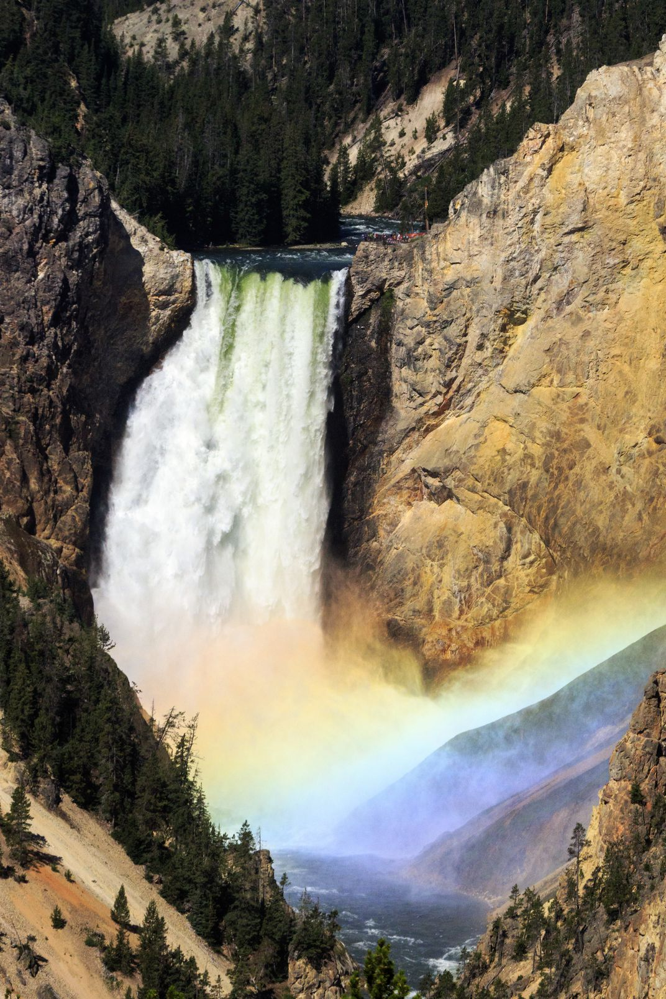

Grand Canyon
The Grand Canyon of Yellowstone stretches almost twenty miles, with sights that include the Upper and Lower Falls. The Upper Falls is over one hundred feet, and the Lower Falls is over three hundred feet. There are numerous trails and lookouts that offer numerous views of both of the falls. The amount of water that flows over the falls ranges from 63,500 to 5,000 gallons throughout the year.
Find more information about trails and lookouts to views of the falls here